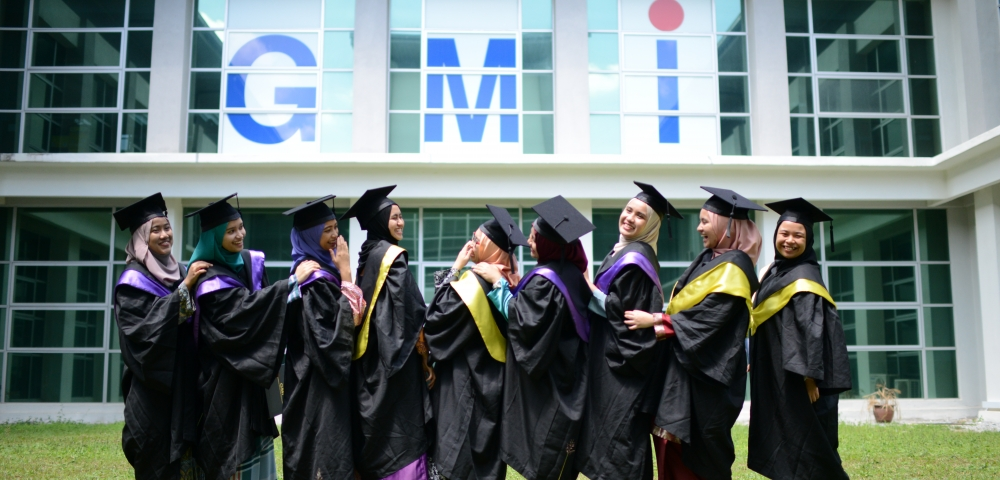
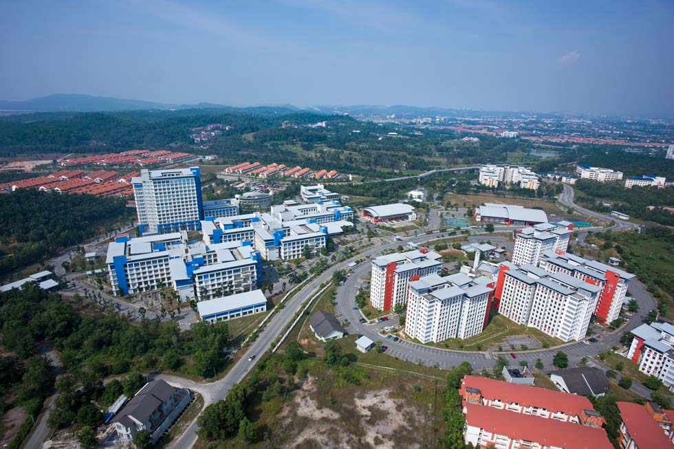

German-Malaysian Institute
German-Malaysian Institute
Sign in 
About GMI
In 1991, German-Malaysian Institute (GMI), a hub for advanced skills training was established. GMI provides a comprehensive and well-balanced training of practical and theoretical. The institute offers a broad-based engineering education, with opportunities for specialization and self-directed learning and development.
GMI offers diverse training programmes and services comprising full time diploma programmes, a pre-university programme (A-Level), skills upgrading technical courses, train-the-trainers programmes, and industrial consultancy and services.
The birth of GMI was the outcome of a joint venture between the Governments of Malaysia and Germany.
GMI is governed by a 10-member Board of Directors comprising representatives from both governments, plus public and industrial representatives.
The institution was set up as a Company Limited by Guarantee whereby the founders are Majlis Amanah Rakyat (MARA) and the Malaysian German Chamber of Commerce and Industry (MGCC), and its implementing agencies are MARA and Deutsche Gesellschaft für Internationale Zusammenarbeit (GIZ) GmbH (formerly known as German Technical Corporation or GTZ).
GMI had its first student enrollment in 1992 and the growing number of enrollment is prevalent.
Media
| Graduation ceremony |
Facilities |
|  |
 |